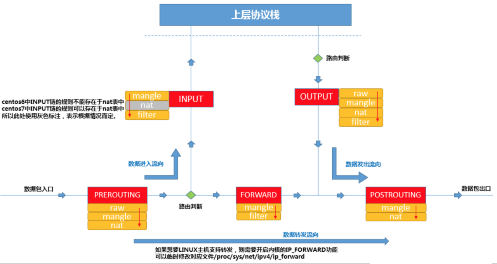

docker和kubernetes的网络
参考资料
- Kubernetes网络实现
- Docker四种网络模式
- Linux虚拟网络技术
kubernetes的网络
- Pod内容器之间的通信：Pod内共享一个网络堆栈，ip地址、网络设备都是共享的
- 同一个Node内的Pod之间的通信：通过docker网桥，相当于在一个局域网
- 不同Node上的Pod之间的通信：需要借助容器网络接口（CNI），比如calico、Flannel
- 每个主机上安装并运行etcd和flannel
- 在etcd中规划配置所有主机的docker网桥子网范围
- 每个主机上的flanneld根据etcd中的配置，为docker网桥分配子网
- Pod之间通讯时，查找etcd数据库找到目标容器的子网所对应的outip（目的宿主机的IP）。将原始数据包封装在VXLAN或UDP数据包中，IP层以outip为目标IP进行封装，由于目的IP是宿主机IP，因此路由是可达的
Docker四种网络模式
- host模式：和宿主机共用一个Network Namespace，网络性能比较好但是没有隔离性
- container模式：指定已经存在的一个容器共享一个 Network Namespace，而不是和宿主机共享
- none模式：没有网卡、IP、路由等信息，需要我们自己为它添加网卡、配置IP等。隔离性好。
- bridge模式：通过虚拟网桥通讯，虚拟网桥的工作方式和物理交换机类似。容器通过交换机连在了一个二层网络中。
Linux虚拟网络技术
- 理解Docker容器网络之Linux Network Namespace
- Network Namespace：有独自网络栈信息，创建一个ns默认有一个lo回环网卡。可为其创建
- 可转移设备：veth
- 不可转移设备：lo、vxlan、ppp、bridge
- veth pair：创建后有两个虚拟网卡设备veth0和veth1，可以把veth附加到ns上
- veth pair：全称是 Virtual Ethernet Pair，它只能实现2个ns之间的网络交互
- 网桥：网桥就是把一台机器上的若干个ns“连接”起来。过程如下：
- 网桥设备 br0 绑定了 eth0 和 eth1
- 网络协议栈的上层来说，只看得到 br0，上层协议栈需要发送的报文被送到 br0，网桥设备的处理代码判断报文该被转发到 eth0 还是 eth1，或者两者皆转发
- eth0 或 eth1 发送报文给 br0，br0 判断报文应该被转发、丢弃还是提交到协议栈上层。
- 有时eth0、eth1 也可能会作为报文的源地址或目的地址，直接参与报文的发送与接收，从而绕过网桥
- iptables/netfilter，iptables其实是一个命令行工具，位于用户空间，它把规则设置到netfilter（真正的防火墙）
- iptables/netfilter（以下简称iptables）可以完成封包过滤、封包重定向和网络地址转换（NAT）等功能。
- iptables消息处理链：
- INPUT：进来的数据包时
- OUTPUT：外出的数据包时
- FORWARD：转发数据包时
- PREROUTING：对数据包作路由选择前应用（所有的数据包进来的时侯都先由这个链处理）
- POSTROUTING：对数据包作路由选择后应用（所有的数据包出来的时侯都先由这个链处理）
- iptables规则表
- Filter：哪些数据可以通过，哪些数据不能通过
- NAT：控制要不要进行地址转换，以及怎样修改源地址或目的地址
- Mangle：主要用来修改IP数据包头，比如修改TTL值、添加标记以便于后续模块对数据包进行处理（往内核skb结构中添加标记，而不是往真正的IP数据包上加东西）
- Raw：raw表里的rule的功能是给数据包打标记，从而控制哪些数据包不做链接跟踪处理，从而提高性能
- iptables消息处理链和规则表的关系如下图：
